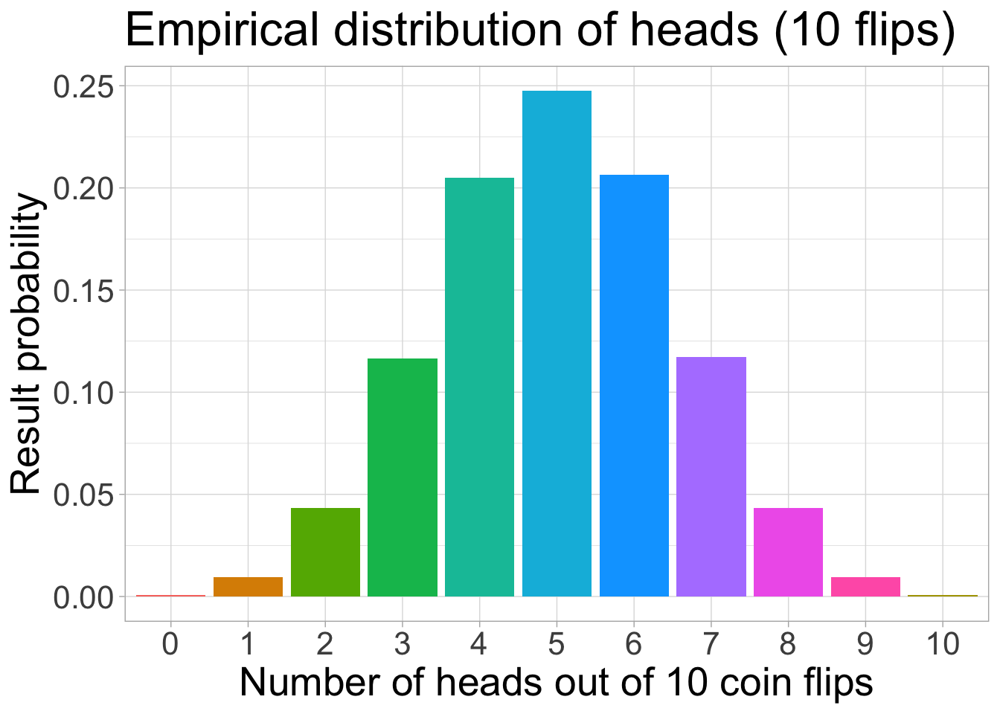
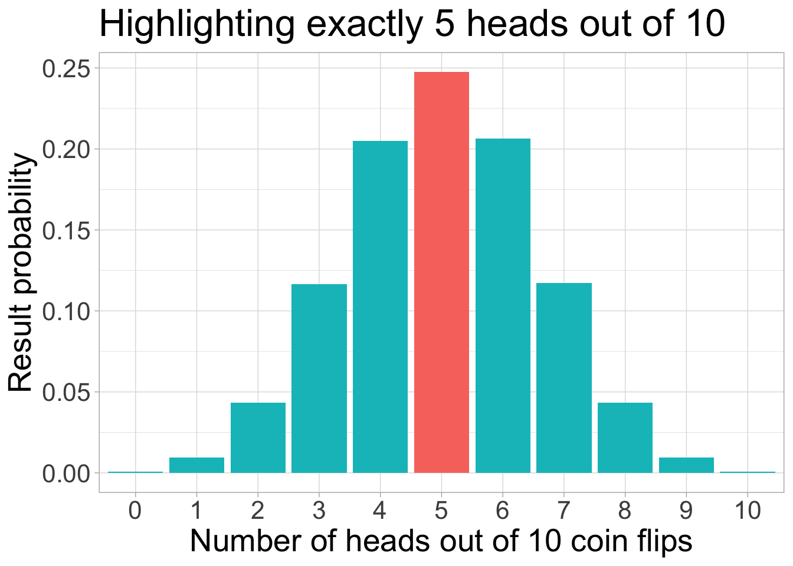
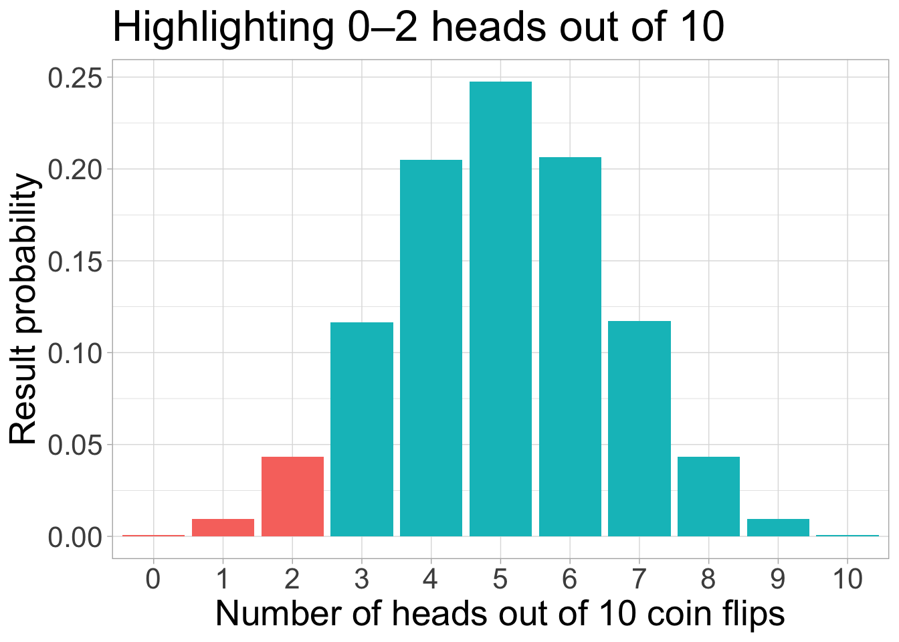
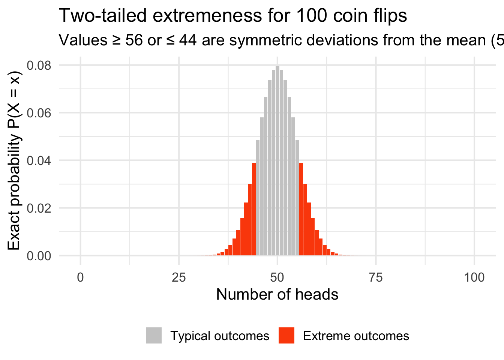

library(tidyverse)
library(flextable)
theme_colors <- data.frame(
light_blue = "#619CFF",
light_orange = "#ffc461"
)
theme_colors light_blue light_orange
1 #619CFF #ffc461theme_set(theme_light())This page introduces the binomial distribution using coin flips:
The goal is to connect intuition (simulated coin flips) with formal probability (binomial formulas).
rbinom() generates random outcomes from a binomial distribution: • n = number of generated observations • size = number of trials (e.g. number of flips) • prob = probability of success on each trial
Now we simulate a lot of flips to see how the distribution of heads behaves.
Each row below is one experiment (e.g. “flip 10 coins and count heads”). We repeat such experiments 100,000 times for 10, 100, and 1000 coins.
coin_flips_multiple <- data.frame(
flips_10 = rbinom(n = 100000, size = 10, prob = 0.5),
flips_100 = rbinom(n = 100000, size = 100, prob = 0.5),
flips_1000 = rbinom(n = 100000, size = 1000, prob = 0.5)
) %>%
as_tibble() %>%
rowid_to_column("id") %>%
tidyr::pivot_longer(
cols = starts_with("flips_"),
names_to = "n",
values_to = "heads"
)
coin_flips_multiple# A tibble: 300,000 × 3
id n heads
<int> <chr> <int>
1 1 flips_10 6
2 1 flips_100 51
3 1 flips_1000 497
4 2 flips_10 4
5 2 flips_100 54
6 2 flips_1000 483
7 3 flips_10 2
8 3 flips_100 57
9 3 flips_1000 507
10 4 flips_10 5
# ℹ 299,990 more rowscoin_flips_multiple_prob <- coin_flips_multiple %>%
group_by(n, heads) %>%
summarise(freq = n(), .groups = "drop") %>%
mutate(prob = freq / 100000)
coin_flips_multiple_prob# A tibble: 180 × 4
n heads freq prob
<chr> <int> <int> <dbl>
1 flips_10 0 91 0.00091
2 flips_10 1 1033 0.0103
3 flips_10 2 4465 0.0446
4 flips_10 3 11713 0.117
5 flips_10 4 20539 0.205
6 flips_10 5 24715 0.247
7 flips_10 6 20314 0.203
8 flips_10 7 11561 0.116
9 flips_10 8 4475 0.0448
10 flips_10 9 1002 0.0100
# ℹ 170 more rowsFocus now on 10-coin experiments and summarise how often we see 0, 1, 2, …, 10 heads.
coin_flips <- coin_flips_multiple %>%
tidyr::pivot_wider(
id_cols = id,
names_from = n,
values_from = heads
)
coin_flips_results <- data.frame(
table(coin_flips$flips_10),
prop.table(table(coin_flips$flips_10)) %>% round(3),
cumulative = cumsum(prop.table(table(coin_flips$flips_10))) %>% round(3)
) %>%
select(-Var1.1)
names(coin_flips_results) <- c("result", "n", "prop", "cumulative")
coin_flips_results <- coin_flips_results %>%
as.matrix() %>%
t() %>%
as.data.frame()
coin_flips_results <- rownames_to_column(coin_flips_results, "heads")
flextable::flextable(coin_flips_results[-1, ])heads | 0 | 1 | 2 | 3 | 4 | 5 | 6 | 7 | 8 | 9 | 10 |
|---|---|---|---|---|---|---|---|---|---|---|---|
n | 91 | 1033 | 4465 | 11713 | 20539 | 24715 | 20314 | 11561 | 4475 | 1002 | 92 |
prop | 0.001 | 0.010 | 0.045 | 0.117 | 0.205 | 0.247 | 0.203 | 0.116 | 0.045 | 0.010 | 0.001 |
cumulative | 0.001 | 0.011 | 0.056 | 0.173 | 0.378 | 0.626 | 0.829 | 0.944 | 0.989 | 0.999 | 1.000 |
Simulate 10-coin experiments and measure mean and standard deviation of heads.
flips <- rbinom(n = 100000, size = 10, prob = 0.5)
flips %>%
table() %>%
as_tibble() %>%
ggplot(aes(x = factor(., levels = 0:10), y = n / 100000, fill = .)) +
geom_col() +
theme(legend.position = "none", text = element_text(size = 20)) +
xlab("Number of heads out of 10 coin flips") +
ylab("Result probability") +
ggtitle("Empirical distribution of heads (10 flips)")
flips %>%
table() %>%
as_tibble() %>%
ggplot(aes(x = factor(., levels = 0:10), y = n / 100000, fill = !(. == 5))) +
geom_col() +
theme(legend.position = "none", text = element_text(size = 20)) +
xlab("Number of heads out of 10 coin flips") +
ylab("Result probability") +
ggtitle("Highlighting exactly 5 heads out of 10")
[1] 0.24738flips %>%
table() %>%
as_tibble() %>%
ggplot(aes(x = factor(., levels = 0:10), y = n / 100000, fill = !(factor(., levels = 0:10) %in% 0:2))) +
geom_col() +
theme(legend.position = "none", text = element_text(size = 20)) +
xlab("Number of heads out of 10 coin flips") +
ylab("Result probability") +
ggtitle("Highlighting 0–2 heads out of 10")
[1] 0.05377[1] 5377Now we move from simulation to exact formulas.
[1] 0.3769531Compare with simulation:
For X (n, p):
We now switch from intuition (simulation) to exact probability using the binomial distribution (X (100, 0.5)\).
The expected number of heads is:
So 56 heads is more than 1 SD above the mean, and values of 44 or fewer are symmetric on the left.
This motivates the idea of a two-tailed test: “How surprising is it to be this far from the mean (on either side)?”
The value 0.03895 means that if the coin is truly fair, the probability of getting exactly 56 heads out of 100 flips is about 3.9%.
In other words, if you repeated this experiment many times (always 100 flips of a fair coin), you would expect an outcome of exactly 56 heads in roughly 4 out of 100 experiments. It’s rare, but not impossible — which is exactly the kind of “unusual but still plausible” event that hypothesis tests are built around.
We look at:
We now compute the probability of being at least this extreme in both tails:
n <- 100
p <- 0.5
# P(X >= 56)
P_ge_56 <- sum(dbinom(x = 56:100, size = n, prob = p))
# P(X <= 44)
P_le_44 <- sum(dbinom(x = 0:44, size = n, prob = p))
# Two-tailed probability
P_ge_56 + P_le_44[1] 0.271253The value of 0.27 means that about 27 % of all outcomes (under a perfectly fair coin) are at least as extreme as getting 56 heads out of 100 tosses.
We consider outcomes that are at least 6 away from the mean (50):
This includes many results, not just a single number — which is why the probability is much larger than P(X = 56).
Because in a two-tailed test we ask:
“How often would we see a result at least this far from the mean if the coin were fair?”
The answer is: 👉 Roughly one out of four experiments will produce a result this extreme or more.
So 56 heads out of 100 is perfectly compatible with a fair coin. It is not evidence of bias.
# Compute the full binomial distribution
df <- data.frame(
heads = 0:100,
prob = dbinom(0:100, size = 100, prob = 0.5)
)
df <- df %>%
mutate(
extreme = (heads >= 56) | (heads <= 44) # highlight tail areas
)
ggplot(df, aes(x = heads, y = prob, fill = extreme)) +
geom_col() +
scale_fill_manual(
values = c("FALSE" = "grey80", "TRUE" = "#FC4E07"),
labels = c("Typical outcomes", "Extreme outcomes")
) +
labs(
title = "Two-tailed extremeness for 100 coin flips",
subtitle = "Values ≥ 56 or ≤ 44 are symmetric deviations from the mean (50)",
x = "Number of heads",
y = "Exact probability P(X = x)"
) +
theme_minimal(base_size = 16) +
theme(
legend.title = element_blank(),
legend.position = "bottom"
)
This visualisation shows exact probabilities for all possible numbers of heads in 100 coin flips.
The center (around 50) holds most of the probability mass. This is what you expect from a fair coin: outcomes cluster tightly around the mean.
The orange bars highlight the extreme regions:
Each orange bar individually is rare, and together they form the total probability of “being at least this far from 50”.
A result like 56 heads is surprising — but not shocking. About 27 % of all experiments would produce an outcome at least this extreme (either ≥ 56 or ≤ 44), even if the coin is perfectly fair.
In other words:
Unusual outcomes happen quite often. A single result like 56/100 is not strong evidence that the coin is biased.
This is exactly the logic behind two-sided p-values: we evaluate how often we would observe a result at least this extreme under the assumption that nothing unusual is happening.